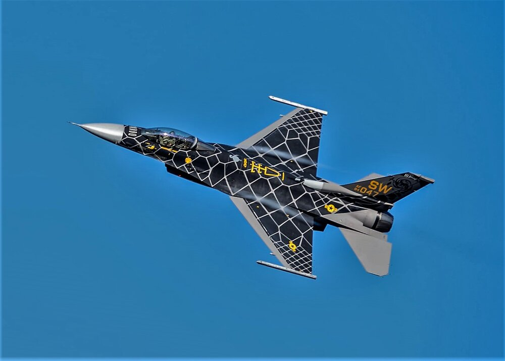
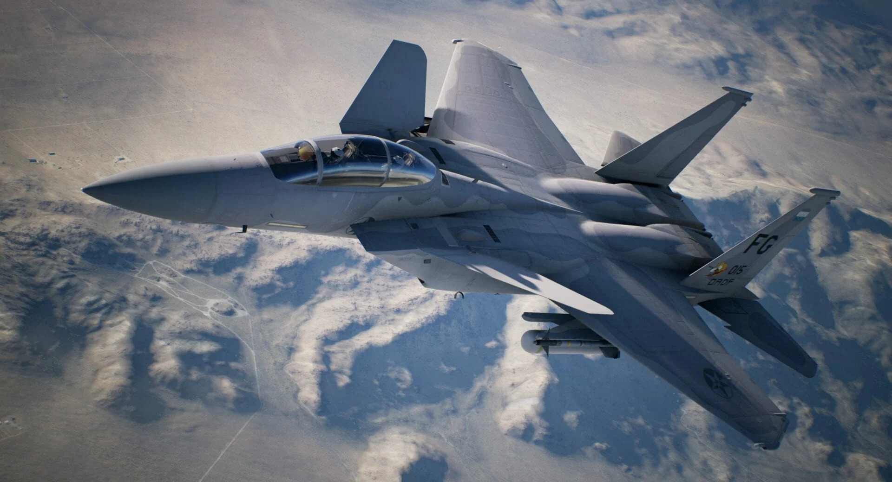

Fighter Aircraft
With 5th generation being prohibitively expensive, AAC has focused on upgrading the aging 4th generation fleets of America's allies. F-15 and F-16 remain one of the most flown aircraft in the world's Air Forces, and with the modernization offered by AAC, these fleets will be a threat and a deterrent to any enemy fielding the newest 5th generation fighters.
 